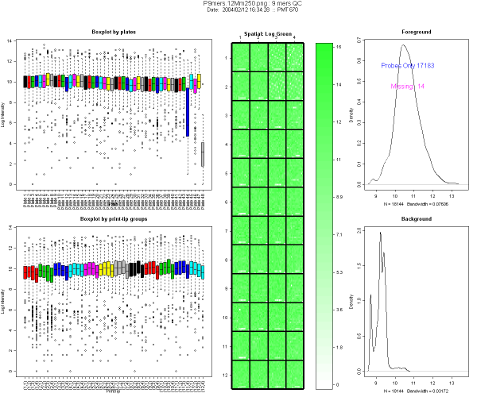
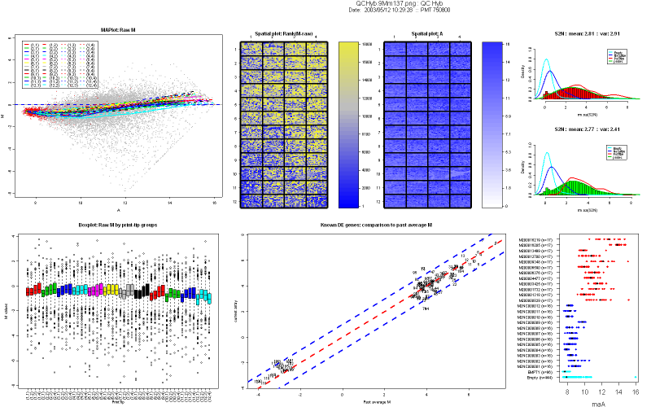

Spotted arrays print-run quality control
April 15, 2008
Agnes Paquet1, Andrea Barczak1, (Jean) Yee Hwa
Yang2
1. Department of Medicine, Functional Genomics Core Facility,
University of California, San Francisco
paquetagnes@yahoo.com
2. School of Mathematics and Statistics, University of Sydney, Australia
Content
This document describes the various functions provided in arrayQuality
that can be used to assess the quality of a print, before the slides
are used for an experiment. These functions are specifically designed
for random 9mers hybridization and QC hybridization only, which are
performed in facilities making their own arrays. Users interested in
assessing quality of any other type of array hybridization
quality control should refer to the basic user guide, which can be
accessed from the main online help page.
1. Print-run quality control
When a print-run is completed, it is necessary to verify the quality of
the resulting arrays. This can be done by using two kinds of
hybridization to the new slides. The first type of hybridization, which
we term “9mers hyb”, uses small oligonucleotides (random 9-mers), which
will hybridize to each probe. This hybridization will help to determine
the quality of spot morphology as well as the presence or absence of
spotted oligonucleotides. The resulting data will be used to create a
list of all missing spots.
The second type of hybridization, which we will term Quality Control
Hybridization (QCHyb), uses mRNA from predefined cell lines (e.g. liver
vs. pool, K562 vs. Human Universal Reference pool from Stratagene).
These hybridizations can be use as a more quantitative description of
the slides. The same comparison hybridizations are done for different
print-run, assessing their reproducibility. QCHybs are also used to
verify accuracy of GAL files, number of missing spots, binding
capacity, background signal intensity…
The arrayQuality package provides specific tools to help assess quality
of slides for both 9-mers and QC hybridization.
2. 9-mers hybridizations
In the package, the graphical function to assess 9mers hybridization
quality is PRv9mers(). It runs using one single command line script. To
use it:
- Copy all 9-mers hybridizations gpr files from the SAME print-run
(same GAL file) to a directory.
- Change R working directory to the one containing your gpr files using the R GUI menu.
- To load arrayQuality:
Type at the R prompt:
library(arrayQuality)
- To run th function type:
PRv9mers(prname=”12Mm”).
The prname argument represents the name of your print-run. For more
details about other arguments, please refer to the online help file.
2.1 Results
PRv9mers() provides the following results:
- Diagnostic plots as image in .png format for each tested slide
- An Excel file (typically named 9Mm9mer.xls, where 9Mm is the name
of your print-run, as passed to prname) containing for each spot on the
slide:
- Name and ID of the spot
- The probability of being present or absent (p from EM
algorithm). If several files are tested together, you will have a
probability of being present/absent for each file.
A spot is considered absent if p < 0.5.
- The average probability of being present or absent.
- The raw signal intensity (Signal column) or average raw
signal intensity if several files are tested together for each spot.
- An Excel file (typically named 9MmMissing.xls, where 9Mm is the
name of your print-run, as passed to prname) containing information on
missing probes only:
- Name and ID of the spot
- The probability of being present or absent (p from EM
algorithm). If several files are tested together, you will have a
probability of being present/absent for each file.
A spot is considered absent if p < 0.5.
- The average probability of being present or absent.
- The raw signal intensity (Signal column) or average raw
signal intensity if several files are tested together for each spot.
- A text file (typically named 9MmQuickList.txt, where 9Mm is the
name of your print-run, as passed to prname) containing the missing
probes ids, each on a separate line. This file can be opened in any
word processing program.
2.2 Description of the diagnostic plots
Figure 1 shows an example from a typical 9-mers hybridization. This
image is divided in 5 panels
- The first column (left) represents boxplots of log intensity, by
plates (top) and by print-tip group (bottom). In this example, you will
notice on the boxplot by plates (top left corner) that plates 44 and 48
have lower intensity and wider range than the others. Both plates
contain mostly empty controls, as designed by Operon.
- Central plot: spatial plot of intensity. This helps to locate
missing spots. The color scale reflects the signal intensity, the
darker the color of the plot, the stronger the signal. Missing spots
are represented in white. In Figure 3 spatial plot, top right corner
white spots come from the empty spots.
- Right column: Density plot of the foreground and background log
intensity.
- Foreground density plot: it should be composed of 2 peaks. A
smaller peak in the low intensity region containing missing spots and
negative control spots, and a higher one representing the rest of the
spots (probes). The number of present and absent spots, excluding empty
controls, estimated by EM algorithm is indicated on the graph.
- Background density plot: one peak in the low intensity
region. If a slide is of good quality, the background peak should not
overlap too much with the foreground peak corresponding to the bulk of
the data.
Density plots are used to compare foreground and background peaks,
using the X-axis scale. They should be clearly separated. The number of
missing spots should be low. Missing spots ids may be incorporated in
the analysis later, e.g. by down weighting them in linear models.
2.3 Examples
This example uses 9-mer hybridization data performed in the Functional
Genomics Core Facility in UCSF. This print-run was created using Operon
Version 2 Mouse oligonucleotides.
> library(arrayQuality)
> datadir <- system.file("gprQCData", package="arrayQuality")
> PRv9mers(fnames="12Mm250.gpr",path=datadir, prname="12Mm")

Figure 1: Example of diagnostic plot for 9-mers
hybridization
3. Quality Control
hybridizations
9-mers hybridizations help verify that oligonucleotides have been
spotted
properly on the slides. The next print-run quality control step will be:
1.
Detect any difference in overall signal intensity
compared to other print-runs
a.
70-mers oligonucleotides hybridizations
b.
Selection of several test slides to ensure that
the same
quantity of material was spotted across the platter, as a print-run
will
generate 255 slides using the same well for one probe. QCHybs are
performed
using one slide from the beginning of the print, one from the middle,
one
from the end (e.g. numbers 20,100 and 255 in the Functional Genomics
Core
Facility).
2.
Check if the GAL file was generated properly, i.e.
check
that no error was made with ordering or orientation of the plates
during the
print.
3.
Reproducibility:
A good way to verify
the
quality of a new print is to hybridize known samples to new slides.
Then, we
can compare signal intensity from the new slides to existing data, and
check
that there is no loss in signal. Log ratios (M) for known samples
should be
similar across print-runs. Example of samples used for QCHybs includes
Human
Reference pool, Mouse liver, Mouse lung, with dye swaps.
The function in the package which performs the
quality
assessment for QCHybs is PRvQCHyb(). It runs using a single line script. To use it:
- Copy the QCHybs gpr files from the SAME
print-run
(same GAL file) in a directory.
- Change R working directory to the one containing
your
gpr files as described in section 1.
- Type in R:
>PRvQCHyb(prname="9Mm")
where prname is the
name
of the print-run. For more details about its arguments, please refer to
the
online manual.
3.1 Results
PRvQCHyb()
returns a diagnostic plot as an image in .png format for each tested
slide.
Throughout our document, we will be using the
color code
described in Table 1 to highlight control spots.
Positive controls
|
Red
|
Empty controls
|
Blue
|
Negative controls
|
Navy Blue
|
Probes
|
Green
|
Missing spots
|
White |
Table 1: Color code
used in arrayQuality
Restrictions:
Currently, PRQCHyb()
supports Mouse genome (Mm) only.
3.2 Description of the diagnostic plots
Figure 2 shows an example of a nice print-run
QCHyb
- MA-plot of raw M values. No background
subtraction is performed. The colored lines represent the loess curves
for each print-tip group. The red dots highlight any spot with
corresponding weighted value less than 0. Users can create their
own weigthing scheme or function. Things to look for in a MA-plot are
saturation of spots and the trend of loess curves, which is an
indicator of the amount of normalization to be performed.
- Boxplot of raw M values by print-tip
group, without background subtraction.
- Spatial plot of rank of raw M values
(no background subtraction): Each spot is ranked according to its M
value. We use a blue to yellow color scale,where blue represents the
higher rank (1), and yellow represents the lower one. Missing spots are
represented as white squares.
- Spatial plot of A values. The color
indicates the strength of the signal intensity, i.e. the darker the
color, the stronger the signal. Missing spots are represented in white.
- Histogram of the signal-to-noise
log-ratio (SNR) for Cy5 and Cy3 channels. The mean and the variance of
the signal are printed on top of the histogram. In addition, overlay
density of SNR stratified by different control types (status) are
highlighted. Their color schemes are provided in Table 1. The SNR is a
good indicator for dye problems. The negative controls and empty
controls density lines should be closer, almost superimposed.
- Comparison of Mvalues of probes known
to be differentially expressed from the tested array to average Mvalues
obtained during previous hybridizations. This plot is aimed at
verifying the reproducibility of print-runs. The dotted lines are the
diagonal (no change) and the +2/-2 fold change lines. Each probe is
represented by a number, and described in the file MmDEGenes.xls. Most
of the spots should lie between the +2/-2 fold-change regions. If the
technique was perfect, you should see a straight line on the diagonal.
If any probe falls off this region (number 29 here), you can look up
its number in our probe list in MmDEgenes.xls and get more information
about it.
- Dot plot of controls A values, without
background subtraction. Controls with more than 3 replicates are
represented on the Y-axis, the color scheme is represented in Table 1.
Intensity of positive controls should be in the high-intensity region,
negative and empty controls should be in the lower intensity region.
Positive controls range and negative/empty controls range should be
separated. Replicate spots signal should be tight.
3.3 Example
Data for this example was provided by the
Functional
Genomics Core Facility in UCSF. We have tested slide number 137 from
print-run 9Mm. This print-run uses Operon Version 2 Mouse oligos.
Results are
represented figure 2.
>
library(arrayQuality)
> datadir <-
system.file("gprQCData", package="arrayQuality")
>
PRvQCHyb(fnames=”9Mm137.gpr”, path=datadir, prname="9Mm")

Figure 2:
Diagnostic plot for print-run Quality Control hybridization